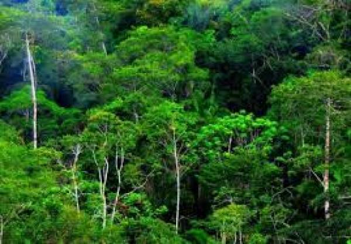
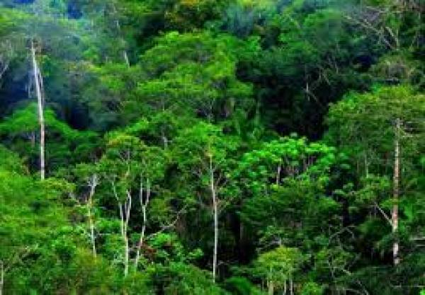

Tujuan ke-15 berfokus pada pelestarian kehidupan di daratan yang bertujuan untuk memulihkan ekosistem daratan, mengelola hutan secara berkelanjutan, memerangi penggurunan, dan menghentikan atau memulihkan degradasi lahan serta mencegah hilangnya keanekaragaman hayati yang disebabkan deforestasi. Ekosistem bumi merupakan hal yang sangat penting untuk menopang kehidupan manusia dan bahkan menyumbang lebih dari setengah PDB (Produk Domestik Bruto) yang merupakan gabungan aktivitas ekonomi dan indikator kesehatan ekonomi global. Ekosistem mencakup berbagai aspek, seperti nilai budaya, spiritual, dan ekonomi.mmaka, epting untuk mempromosikan pemanfaatan ekosistem kita secara berkelanjutan dan melestarikan keanekaragaman hayati yang telah menjadi bagian dari kelangsungan hidup kita.

Tahun 2020, memastikan konservasi, pemulihan, dan pemanfaatan berkelanjutan ekosistem air tawar darat dan pedalaman serta layanannya, khususnya hutan, lahan basah, pegunungan, dan lahan kering yang sejalan dengan kewajiban berdasarkan perjanjian internasional.

Pada tahun 2020 mendorong penerapan pengelolaan berkelanjutan pada semua jenis hutan, menghentikan penggundulan hutan, memulihkan hutan yang terdegradasi, dan tingkatkan secara substansial penghijauan dan reboisasi secara global.

Pada tahun 2030 memerangi penggurunan, memulihkan tanah dan lahan yang terdegradasi, termasuk lahan yang terkena dampak penggurunan, kekeringan, dan banjir, serta berupaya mencapai dunia yang netral terhadap degradasi lahan.
Pada tahun 2030, memastikan konservasi ekosistem pegunungan, termasuk keanekaragaman hayatinya untuk meningkatkan kapasitasnya dalam memberikan manfaat yang penting bagi pembangunan berkelanjutan.
Mengambil tindakan dalam kondisi mendesak dan signifikan untuk mengurangi degradasi habitat alami, menghentikan hilangnya keanekaragaman hayati dan pada tahun 2020, melindungi dan mencegah kepunahan spesies yang terancam.

Mempromosikan pembagian keuntungan yang adil dan setara yang timbul dari pemanfaatan sumber daya genetik dan mempromosikan akses yang tepat terhadap sumber daya tersebut, sebagaimana disepakati secara internasional.
Mengambil tindakan segera untuk mengakhiri perburuan liar dan perdagangan satwa liar yang dilindungi serta mengatasi permintaan dan pasokan produk satwa liar ilegal.

Pada tahun 2020, memperkenalkan tindakan untuk mencegah masuknya dan secara signifikan mengurangi dampak spesies asing invasif pada ekosistem darat dan air serta mengendalikan atau memberantas spesies prioritas.
Pada tahun 2020, mengintegrasikan nilai-nilai ekosistem dan keanekaragaman hayati ke dalam perencanaan nasional dan lokal, proses pembangunan, strategi dan akuntansi pengurangan kemiskinan.
Menggerakan dan meningkat secara signifikan sumber daya keuangan dari semua sumber untuk melestarikan dan memanfaatkan keanekaragaman hayati dan ekosistem secara berkelanjutan.

Mengerahkan sumber daya yang signifikan dari semua sumber dan di semua tingkatan untuk membiayai pengelolaan hutan berkelanjutan serta menyediakan insentif yang memadai bagi negara-negara berkembang untuk memajukan pengelolaan tersebut, termasuk untuk konservasi dan reboisasi.